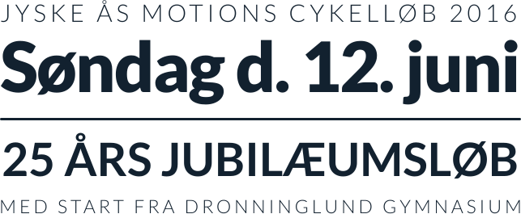

Jyske Ås arrangeres af Lions Club Dronninglund med det formål at samle midler ind til uddeling i henhold til Lions formålet. Alt indsamlet bliver uddelt og alt arbejde er frivilligt arbejde. Alt administration betales af Lions medlemmerne.